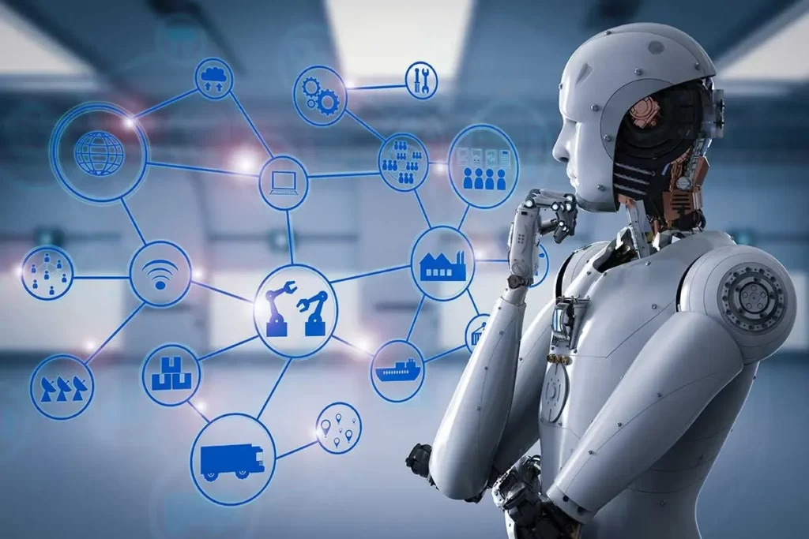
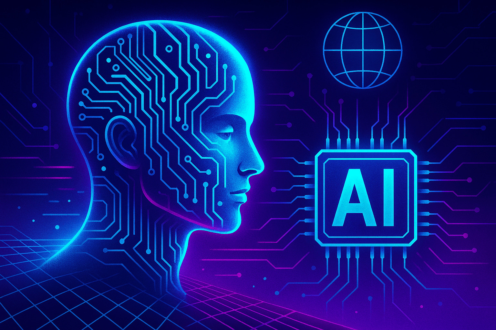
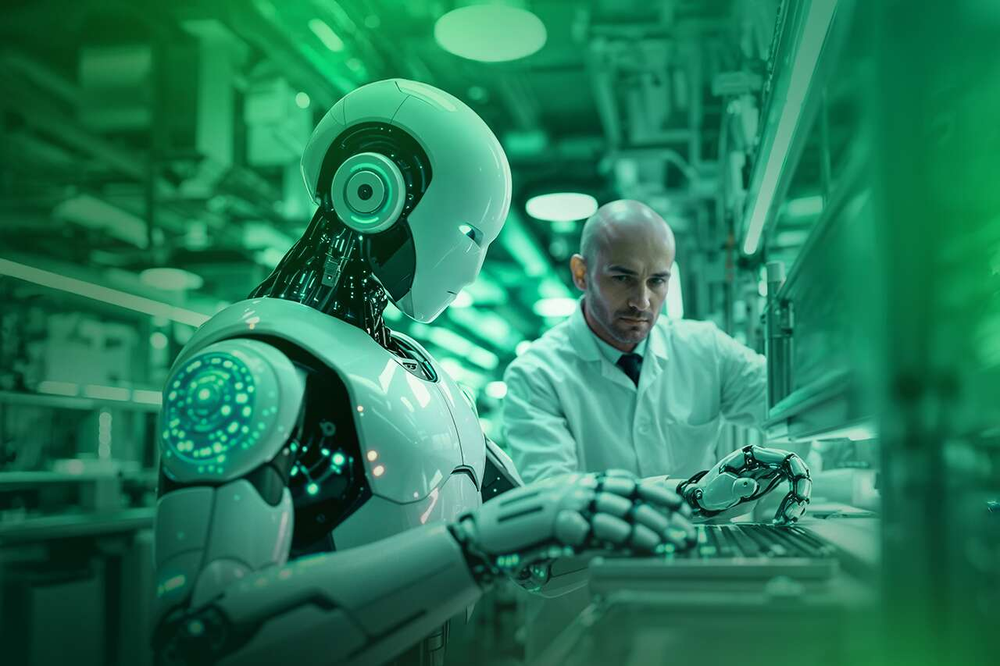

Robótica no Futuro
O futuro da robótica
A robótica está evoluindo rapidamente e deverá estar cada vez mais presente na sociedade. Com o avanço da tecnologia, os sistemas robóticos tendem a se tornar mais precisos, eficientes e autônomos, conseguindo realizar atividades cada vez mais complexas.
Essa evolução também mudará nossa relação com a tecnologia. Novos sensores, sistemas de comunicação e formas de processamento permitirão que as máquinas compreendam melhor o ambiente e se adaptem a diferentes situações. Por isso, a robótica poderá influenciar diretamente a maneira como vivemos e trabalhamos no futuro.

Inteligência Artificial e Robótica
A Inteligência Artificial será fundamental para o desenvolvimento da robótica. A união dessas tecnologias permitirá que sistemas analisem informações, reconheçam padrões e utilizem dados para melhorar seu funcionamento.
Com isso, as máquinas poderão depender menos de comandos previamente definidos e apresentar maior capacidade de adaptação. Conforme essas tecnologias avançarem, a interação entre pessoas e sistemas robóticos também poderá se tornar mais natural e eficiente.
Esse desenvolvimento, porém, deverá acontecer com atenção à segurança e ao controle das tecnologias, principalmente conforme os sistemas se tornarem mais autônomos.

Impactos e desafios
O avanço da robótica poderá causar grandes mudanças na sociedade, principalmente na forma como as pessoas trabalham e utilizam a tecnologia. Algumas atividades poderão ser automatizadas, enquanto novas profissões e áreas de conhecimento deverão ganhar importância.
Ao mesmo tempo, questões relacionadas à segurança, privacidade e responsabilidade precisarão ser discutidas. Quanto mais avançados e independentes forem os sistemas, maior será a necessidade de estabelecer regras para seu desenvolvimento e utilização.
O futuro da robótica dependerá, portanto, não apenas dos avanços tecnológicos, mas também de como a sociedade escolherá utilizar essas novas possibilidades.
